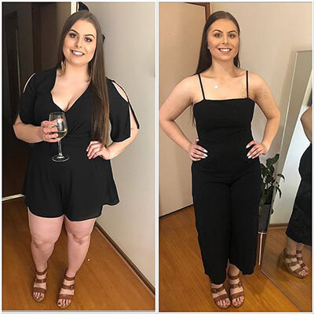
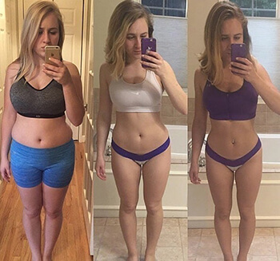

ESCLUSIVO: Nuove "gocce di snellezza" hanno battuto tutti i rating di popolarità nel nostro paese. La madre di due bambini di Milano ha provato il prodotto e ha perso 20 kg in 4 settimane!
Abbiamo ottenuto recensioni da Maria con i dettagli di questa sensazionale storia di perdita dell peso. La redazione appositamente per i suoi lettori hanno deciso di scoprire tutti i dettagli di una nuova dieta con i mezzi Kanabialica e scoprire se è efficace come parlarne.
Un giornalista Beatrice Bertini
sta studiando un modo insolito per la perdita di peso, che sta diventando sempre più popolare nel nostro paese.
Negli ultimi tre mesi, i nostri lettori sono semplicemente scioccati per la nuova sensazione del Internet - un rimedio naturale a base di estratto di canapa - Kanabialica. Ha aiutato migliaia di donne in tutto il mondo a ridurre radicalmente il peso e ad eliminare le pieghe dalla pancia. Questo rivoluzionario sistema di perdita di peso, chiamato "Sacro Graal di perdita di peso", è diventato l'eroe di diversi programmi televisivi. Come si è scoperto, lo strumento Kanabialica è al 100% naturale e allo stesso tempo assolutamente conveniente.
Anche molti personaggi famosi stranieri come Vicky Pattison, Jessica Simpson, Ricky Gervais e Jonah Hill sono stati in grado di perdere peso, utilizzando solo quelle gocce. Il loro fantastico effetto è stato clinicamente testato. Non solo bruciano rapidamente tutto il grasso accumulato, ma purificano il corpo dalle tossine, lo ringiovaniscono e accelerano significativamente il metabolismo. Tutto ciò affinché il corpo in futuro non accumuli più depositi di grasso.
Come spesso riscontrato nei nostri studi su diversi metodi di perdita di peso, lo stesso processo di perdita di peso è un compito molto difficile, ei risultati sono spesso poche o temporanei.
Tuttavia, dopo lunghe ricerche e interviste con le persone che assumevano Kanabialica, ci siamo resi conto che questo è davvero un passo avanti nella dietetica. Continua a leggere e scopri perché abbiamo dedicato tempo speciale a questo metodo.
ULTIME NOTIZIE
Molti non perdono peso a causa della mancanza di determinati ingredienti nella loro dieta!
A differenza degli additivi moderni, Kanabialica può fare miracoli in termini di riduzione del peso e correzione della forma del corpo. La combinazione di questo prodotto con una dieta sana può farti perdere fino a 20 kg in 2 mesi.
Clinicamente, le gocce di Kanabialica contengono estratti di canapa, estratti di Cordyceps, Rambutan, kivano, cherimoya, caffè verde e tè verde, Pomerania, oltre a cromo picolinato, L-carnitina e complesso vitaminico-B12, B1 E C.
Cosa dicono gli altri

Tutti i miei amici mi parlano per Kanabialica. Ho problemi con il sovrappeso da scuola, quindi puoi immaginare quanti anni sogno di sentirmi bene e bella come le mie esili amiche. Secondo le loro raccomandazioni, una volta ho provato il rimedio Kanabialica e non lo scambierò mai più per nessun'altra. Dopo tutto, con Kanabialica, sono stata in grado di perdere 12 kg per, e la mia figura ora è semplicemente impeccabile, adoro il mio nuovo corpo ora!
Alessandra, Milano
maggiori informazioni >>>
Dopo 20 anni, ho iniziato ad avere problemi con il sovrappeso. Poi da corpo magro e bello mi sono trasformato in un uomo grasso. Poi ho iniziato ad andare in palestra, e il mio allenatore mi ha consigliato di bere molta acqua e prendere Kanabialica due volte al giorno. I risultati sono semplicemente sensazionali: meno 14 kg in 4 settimane. Grazie mille!
Fabrizio, Trapani
maggiori informazioni >>>

Come madre di tre bambini ogni giorno devo essere combattuta tra lavoro, figli e altre cose ...
Un giorno il mio amico mi ha regalato Kanabialica. Ho davvero iniziato a perdere peso nella prima settimana. Un mese dopo, non potevo credere di essere diventato quello che avevo sognato a lungo di essere. Grazie per tutto, Kanabialica, sei un miracolo!
Rosalba, Grossetto
maggiori informazioni >>>
PROVALO ORA

Qui ho perso 12 kg!, Dice Tiziana
Ordina Kanabialica
La ragione per cui la maggior parte delle diete, a nostro mente fallisce, è che impongono restrizioni irrealistiche sul modo in cui viviamo. Alcuni dicono che abbiamo bisogno di mangiare un sacco di proteine, altri sottolineano l'importanza dei carboidrati. In entrambi i casi, devi apportare cambiamenti drastici alle tue abitudini alimentari.
In questo numero speciale, prendiamo un sempre più popolare sistema di perdita di pesoche non necessita di diete, niente sport e, soprattutto, non danneggia il corpo. Consideriamo questa una vera rivoluzione nell'approccio alla perdita di peso.
Forse hai già sentito parlare delle famose gocce di Kanabialica in TV. Contengono estratti di canapa, estratti di Cordyceps, Rambutan, kivano, cherimoya, caffè verde e tè verde, Pomerania, oltre a cromo picolinato, L-carnitina e un complesso di vitamine-B12, B1 E C.
Tutti questi ingredienti hanno lo scopo di bruciare il grasso in eccesso e accelerare il metabolismo.
Studi prestigiosa UCLA Research Center, Los Angeles (Stati Uniti) a goccia Kanabialica ha dimostrato che l'uso regolare di questo prodotto può accelerare il metabolismo e la capacità del corpo di bruciare i grassi per 318%.
Tuttavia, il problema è che dopo il successo di Kanabialica sono apparsi sul mercato molti falsi, che sono completamente inefficaci rispetto all'originale.
Ma l'originale Kanabialica nella sua efficacia in molti modi ha superato le nostre aspettative. Le persone che hanno assunto Kanabialica con un trattamento completo hanno reso significativamente il peso, diventi più energici e attivi. Ma se sei scettico, allora non sei solo. Pure noi, appena ne abbiamo sentito parlare di queste gocce meravigliose con estratto di canapa, non abbiamo immediatamente creduto nella loro efficacia.
Tuttavia, avendo deciso che questa tendenza generale merita la nostra attenzione, abbiamo iniziato a studiare le storie di persone che hanno perso peso con Kanabialica. Soprattutto eravamo interessati al fatto che queste persone non hanno cambiato il loro modo di vivere.

Il risultato di una dieta con Kanabialica: i nostri lettori hanno perso almeno 7 kg in sole un mese!
Uno dei nostri lettori, Margarita di Taranto, afferma di aver perso più di 20 kg in sole 5 settimane con goccioline Kanabialica. Nel suo blog ha scritto:
«Non potevo credere quanto fosse facile, non ho cambiato le mie abitudini, ma il grasso si è sciolto come burro, adoro questo prodotto! Finalmente ho trovato uno strumento che funziona!»
Commento di un altro lettore Elisa:
Una volta mi hanno scelto per il test gocce naturali Kanabialica, perché ho deciso di buttare circa 10 chili in più al proprio matrimonio, che era prevista tra 3 mesi. Sono stato prenotato per il corso di Kanabialica, e lui è stato portato in un paio di giorni.
Mi sono fidato facilmente di Kanabialica, perché aveva buoni risultati di studi clinici ed è stato approvato da laboratori di ricerca con rigidi requisiti di controllo del prodotto. Mi hanno informato, che Kanabialica sono le uniche gocce che contengono l'estratto di canapa concentrato in forma pura e in dosaggio giusto. In combinazione con altre sostanze attive, questo prodotto ha un potente effetto brucia grassi ed è l'integratore più efficace per la perdita di peso sul mercato.
Clinicamente provato che Kanabialica:
- Normalizza lo sfondo ormonale dell'organismo;
- Regola i processi metabolici, rafforza la pelle, i capelli e le unghie;
- Regola il metabolismo, promuove un migliore assorbimento dei nutrienti;
- Riduce il livello di colesterolo, regola il lavoro del tratto gastrointestinale;
- Rimuove le tossine, brucia i grassi e attiva il processo di riparazione cellulare.
Ho preso Kanabialica 2 volte al giorno, precedentemente sciolto in acqua, per circa un mese.
I miei risultati: ho buttato via 12 kg in un mese, diventando di quasi 3 taglie di meno. Ora sono pronto a piangere dalla felicità!
Prima settimana:
Dopo una settimana di utilizzo delle gocce, sono rimasta sorpresa dalla rapidità con cui hanno iniziato a lavorare. Sono diventata anche più energica, e quasi non volevo mangiare - Kanabialica riduce l'appetito e le voglie per i dolci.
Mi sentivo benissimo!
Ma la cosa principale è che non ho cambiato nulla nella mia vita quotidiana. Il settimo giorno sono salito sulla bilancia e non potevo credere ai miei occhi. Ho perso 5 kg. Ma non mi sono subito rallegrato molto, perché mi hanno detto che la prima cosa che va persi liquidi prende dal corpo. Ho deciso di vedere cosa succederà dopo con mio peso.
Seconda settimana:
Dopo due settimane sono diventata ancora più energica e il mio umore è migliorato. Un altro vantaggio: ho iniziato a dormire bene e non mi sveglio mai di notte. Inoltre, 2 kg rimasti - in appena 2 settimane ne ho persi 7. Poi ho iniziato a capire che Kanabialica non è solo una specie di trucco pubblicitario, è davvero uno strumento che funziona.
Terza settimana:
In 3 settimane tutti i miei dubbi sono scomparsi! Ho perso altri 2 kg e ho capito che per 2 taglie di meno! E ho anche avuto molta energia, anche se di solito alla fine della terza settimana della dieta il corpo si è esaurito, ma con Kanabialica è risultato il contrario - la forza è diventata solo di più. Un'altra bella osservazione: il cibo è diventato più buono da digerire e il gonfiore è scomparso.
Quarta settimana:
Dopo la quarta settimana, i risultati finali sono stati incredibili - meno 12 kg per 1 mese con Kanabialica. I risultati sono reali! Nel editoriale di Mom's Health tutti mi congratulano e dicono che non siano stati loro stessi sottoposti all'esperimento. Certo, io, da un lato, non avevo così tanto peso in eccesso, d'altro canto - sono felice di essere diventata molto più magra e più energica.
Certo, continuerò a prendere Kanabialica per un po ', dato che il prodotto contiene molti antiossidanti e vitamine che rallentano l'invecchiamento e rendono la pelle radiosa.
Nel mio nuovo corpo snello mi sento assolutamente felice.
E l'abito da sposa mi sta proprio benissimo!
Ho perso 12 kg in 4 settimane senza diete ed esercizi speciali.
In conclusione, se dubiti ancora dell'efficacia di Kanabialica, dovresti cercare di credere; Il nostro test ha dimostrato che i risultati sono reali. Noi in redazione di Mom's Health studiamo più di 100 diete all'anno e, anche se all'inizio avevamo dei dubbi, ci siamo convinti che Kanabialica funzioni davvero. Dopo la nostra ricerca, siamo lieti di annunciare che il test ha avuto esito positivo.
IMPORTANTE: * Durante le prove cliniche, è stato dimostrato che, per ottenere risultati simili, il prodotto deve essere utilizzato REGOLARMENTE.

SCONTO DEL 50%
per i nostri lettori:
Utilizza il nostro LINK ESCLUSIVO e ricevi sconto oggi!
ORDINA ORA
Ragazze, non scriviamo spesso commenti di questo tipo, ma è uno strumento troppo buono per nasconderlo alle persone.
Prova e dimmi cosa ne pensi!
La tua opinione è importante per noi.
Il numero di pacchetti è limitato. Gli sconti sono ancora disponibili il 11.12.2019
Commenti:
Federica
Pubblicato 1 ora fa
Ho sentito parlare di questo prodotto in TV, ma non sapevo dove ordinarlo. Fortunatamente, ho trovato per caso questo sito, dove c'e anche lo sconto. Quindi almeno non pagherò il prezzo intero per quello che potrebbe non funzionare. Anche se spero ancora che perderò peso con le gocce))
Maria- Grazia
Pubblicato 1 ora fa
Ho cercato da fare la dieta tutto il tempo, ma oggi ho ordinato queste gocce. Grazie per il supporto! Ora, per coraggio, farò anche il fitness:)
Stefano
Pubblicato 2 ora fa
Ciao a tutti, ho visto queste gocce in TV, e le ordinerò mentre che ci sono i sconti, ma per favore scrivete sempre se il prodotto funzioni per uomini. Non dimenticateci per la prossima volta, LOL!
Giorgia
Pubblicato 2 ore fa
Io e mio marito abbiamo ordinato e stiamo provando questo prodotto, grazie.
Mirca
Pubblicato 3 ore fa
A mia madre al lavoror hanno consigliato questo prodotto. Penso che funzionino bene.
Barbara
Pubblicato 3 ore fa
Ho ordinato queste gocce per me 3 settimane fa, anche se non c'erano i sconti, ma i risultati sono davvero incredibili, non ho nemmeno pensato che i rimedi naturali possano essere così efficaci.
Tatiana
Pubblicato 4 ore fa
E 'davvero naturale al 100%? Vorrei provare in questo caso, non assumo nessun tipo di chimica e non prendo medicine
Giuseppe
Pubblicato 4 ore fa
Ho appena iniziato aa assumere queste gocce! E' passata solo una settimana, ma sono diventato davvero più energico e attivo
Silvia
Pubblicato 4 ore fa
Io compro molto su Internet e non posso credere di non aver sentito parlare di Kanabialica, che storia fantastica! Grazie!
Martina
Pubblicato 5 ore fa
Non immaginavo nemmeno di poter ottenere tali risultati! Mi sono ordinata questi gocce. grazie al vostro link!
Michela
Pubblicato 5 ore fa
Non voglio perdere questa promozione! Mi lancia questo link, per favore
Luisa
Pubblicato 5 ore fa
Comprate solo da produttori ufficiali qui, le contraffazioni non funzionano affatto